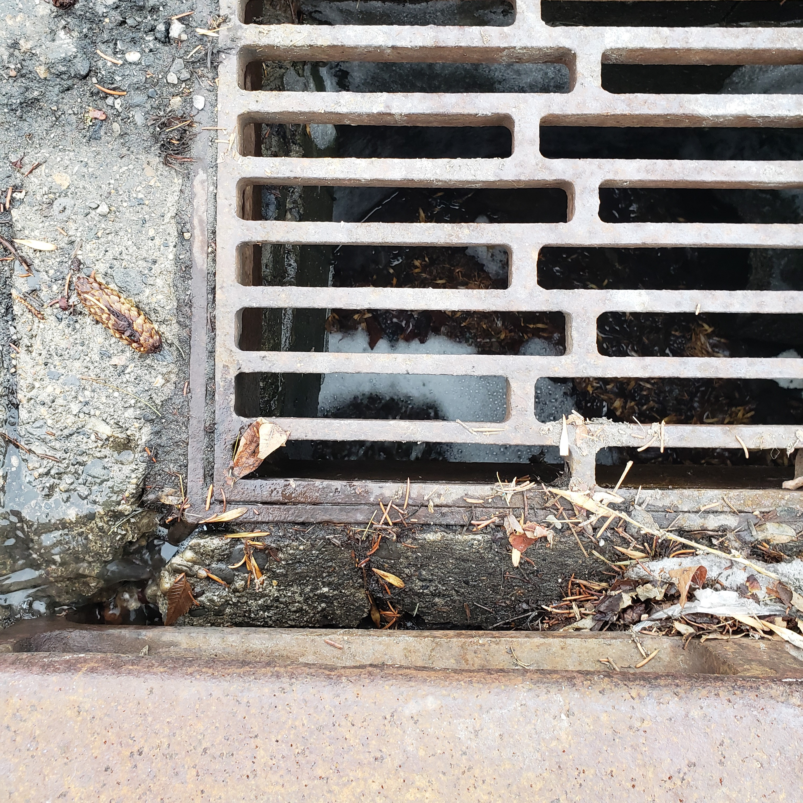

Week 4 photo a storm drain
Week 4 photo pooled water in front of a building
![hoto from January 31. In this image we look towards the trailer sitting outside of building on a suburban campus. The background of the photos is the brown, tan color of the trailer two windows can be seen with tree trunks in the foreground of them. There is a huge pool of water surrounding the base of two deciduous trees running many meters in length. There is a snow pile on the left-hand side of the image, towards the sidewalk, this snow seems to be acting as a dike to keep the water on the lawn.](Images/20240131_081428_math_sci.jpg "Photo from January 31. In this image we look towards the trailer sitting outside of building on a suburban campus. The background of the photos is the brown, tan color of the trailer two windows can be seen with tree trunks in the foreground of them. There is a huge pool of water surrounding the base of two deciduous trees running many meters in length. There is a snow pile on the left-hand side of the image, towards the sidewalk, this snow seems to be acting as a dike to keep the water on the lawn.")
This week was the hardest week to get around. Very few people would give me space on the bus and one bus driver pulled out before letting me sit down. I wonder if the warmer dryer weather makes people do fewer nice things for others.
This week the sidewalks are largely dry, and the air is largely warm. My journeys in landscape are beautiful and full of lovely sounds.
This week I find myself grasping the rail on my bus as it pulls away from my stop before I can sit down. I am afraid to fall. I am afraid a fall could lead me to bleed so severely I need to be hospitalized again.
This week I find myself having to directly ask people on the bus to please give me a seat. I feel conflicted (what if they have an invisible disability?). When I ask for a seat people just sit and blankly stare at me.
When it was cold and snowy it seemed like everyone was keen to look out for others. When it warmed and was icy, people moved out of my way on the sidewalk. This week, my needs seem invisible.
In the warm balmy weather of a Calgary chinook, I find the social infrastructure of this city profoundly cold, increasingly disabling.I want to cry. I want to scream. I want to preach.
Instead, I take the seat I must fight for. Shrinking myself too much; thanking others too much. I sit down and try to make myself small.
![This week we see all the snow melt and disappear from the ground; this is shown on the graph with the slow shrinking of the white bars that represent the accumulation of snow. By Sunday February 4th there is no snow on the ground. This is accompanied by temperatures above zero for the whole week. The background for this week is starting to become subtly lighter and paler than at the beginning of the experiment, this demonstrates how sunlight starts to fade the red dye, the banding of the colors has been softened.](Images/Week 3 and 4 focus.jpg)